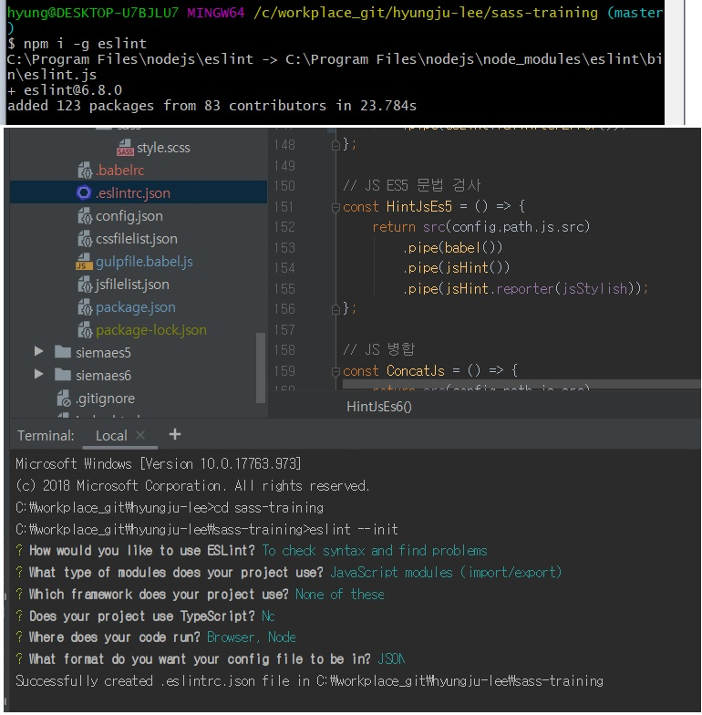

ESLint 환경설정, ES6 문법 오류 검사
ESLint 환경설정, ES6 문법 오류 검사
eslint 모듈을 전역적으로 설치 후,
eslint --init
명령어를 실행합니다.
아래 사진처럼 대화형으로 초기 설정을 하시면
그 설정에 따라 .eslintrc.json 파일이 생성되는 것을 보실 수 있습니다.
이렇게 하시면 eslint를 사용할 준비가 끝납니다.
